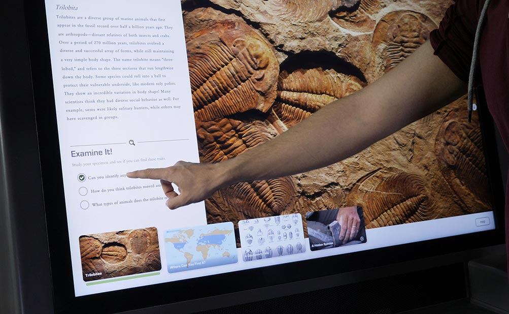

Michigan Naturalist Table
The Michigan Naturalist Table is an exhibit for the brand new University of Michican Natural History musuem. This was developed at Ideum, for more specific information check out the description on their portfolio. The main goal of this exhibit was to allow more of the museums collection to be viewed and explored by vistors.
The exhibit consists of 20 different specimens, and one specimen viewing station. Visitors will select a specimen that they are interested in and take it to the speciment viewing station, once a specimen is placed on the viewing station that specimens information will appear on the screen. The viewing station contains information about each specimen, leading questions to help visitors examine the specimen they chose, and unique and engaging media peices.
How it works?
One of the goals of the Michigan Natural History museum was for this experiance to be "magical" and not require much user input. Each specimen in the collection is tagged with tag that has an embed RFID tag. Inside the cusom exhibit cabinetry there is an embed RFID reader that will read the RFID tag as the specimen is placed on the shelf.
We were able to achieve approximently 18-24 inches of read distance above the shelf at full RFID reader power, and ended up aiming for approximently 3 inches above the shelf as the optimal read distance.
We did discover an interesting issue during taping of the exhibit. If the plastic piece of the shelf was rubbed vigorously (such as wiping off smudges or finger prints) it would cause the RFID reader to stop functioning. What I discovered was that as the plastic was being rubbed it would start to build up a static charge, and once that reached its peak it would be able to jump the small cap between the plastic and the RFID reader and cause the USB protection to trigger causing the RFID reader to stop functioning. Luckily this able to be remidied by simply grounding the mounting screws for the RFID into the computers power supply and the issue was resolved.
Accessiblity
One concern for this exhibit was to make it as accesible as possible. A unique feature of this exhibit was to include an accessbility shortcut layer to allow a visitor to view a specimen without nessisarily having to select it off of the shelves that surround the viewer. If a visitor holds three fingers down on the screen it will activate a list view of the different specimens that are available to view. Additionally instructions on how to access this view is included in the information that appears in the about window.
In order to also allow for easy access to the interactive for small children or those in a wheelchair careful consideration was taken with placement of the User Interface to the bottom half of the screen. Even with the angle of the screen this allows the majority of visitors to be able to easily interact with the exhibit.
Managing Content
Due to the amount of information on each specimen as the high likelyhood of specimens being swapped out, removed, or added, a Content Managment System (CMS) was also created. This CMS allowed for the addition, removal, and updating of specimens and their related information. This allows the curators and musuem staff to keep the exhibit up to date in an easy and user friendly manner.